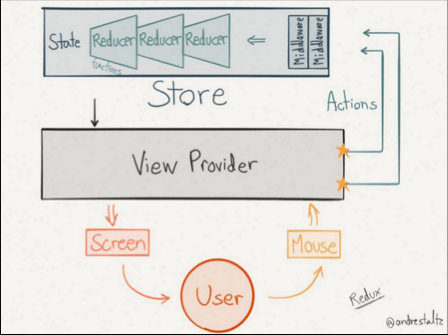

版本：v4.0.0
前言
受2014年Facebook的 Flux 架构模式以及函数式编程语言Elm启发，Dan Abramov在2015年创建了 Redux。很快，Redux因其体小精悍（只有2kB）且没有任何依赖短时间内成为最热门的前端架构。
Redux 是可预测的状态管理框架，它很好的解决多交互，多数据源的诉求。Redux 设计之初，作者就严格遵循三个设计理念原则：
单一数据源：整个应用的 state 都被储存在一棵object tree中，并且这个object tree只存在于唯一一个store中。Store 可以看做是数据储存的一个容器。在这个容器里面，只会维护唯一的一个State Tree。Store 会给定4种基础操作方法：dispatch(action)，getState()，replaceReducer(nextReducer)，subscribe(listener)。根据单一数据源原则，所有数据会通过store.getState()方法调用获取。
State只读：根据State只读原则，数据变更会通过store，dispatch(action)方法。Action可以理解为变更数据的信息载体。type是变更数据的唯一标志，payload是用来携带需要变更的数据。格式为：const action = { type: 'xxx', payload: 'yyy' }; Reducer是个纯函数。负责根据获取action.type的内容，计算state数值。格式为：reducer: prevState => action => newState。
使用纯函数变更state值：Reducer只是一些纯函数，它接收先前的state和action，并返回新的state.
正常的一个同步数据流为：view层触发actionCreator，actionCreator通过store.dispatch(action)方法, 变更reducer。但是面对多种多样的业务场景，同步数据流方式显然无法满足。对于改变reducer的异步数据操作，就需要用到中间件的概念，如图所示：

源码结构
Redux 的源码结构很简单，源码都在 src 目录下，其目录结构如下：1
2
3
4
5
6
7
8src
├── utils ---------------------------------------- 工具函数
├── applyMiddleware.js ---------------------------
├── bindActionCreators.js ------------------------
├── combineReducers.js ---------------------------
├── compose.js -----------------------------------
├── createStore.js -------------------------------
├── index.js ------------------------------------- 入口 js
源码入口
index.js 是整个代码的入口，其代码如下：1
2
3
4
5
6
7
8
9
10
11
12
13
14
15
16
17
18
19
20
21
22
23
24
25
26
27
28
29
30
31
32import createStore from './createStore'
import combineReducers from './combineReducers'
import bindActionCreators from './bindActionCreators'
import applyMiddleware from './applyMiddleware'
import compose from './compose'
import warning from './utils/warning'
import __DO_NOT_USE__ActionTypes from './utils/actionTypes'
function isCrushed() {}
if (
process.env.NODE_ENV !== 'production' &&
typeof isCrushed.name === 'string' &&
isCrushed.name !== 'isCrushed'
) {
warning(
'You are currently using minified code outside of NODE_ENV === "production". ' +
'This means that you are running a slower development build of Redux. ' +
'You can use loose-envify (https://github.com/zertosh/loose-envify) for browserify ' +
'or setting mode to production in webpack (https://webpack.js.org/concepts/mode/) ' +
'to ensure you have the correct code for your production build.'
)
}
export {
createStore,
combineReducers,
bindActionCreators,
applyMiddleware,
compose,
__DO_NOT_USE__ActionTypes
}
入口代码很简单，首先isCrushed函数主要是为了验证在非生产环境下Redux是否被压缩？如果被压缩了，isCrushed.name !== 'isCrushed' 就等于 true，这样就会给开发者一个warn提示。最后暴露createStore、combineReducers、bindActionCreators、applyMiddleware、compose 这几个接口给开发者使用，接下来我们逐一解析这几个 API。
createStore.js
createStore.js 是 Redux 最重要的一个 API ，它负责创建一个 Redux store 来储存应用中所有的 state，整个应用中应有且仅有一个 store。其代码如下：1
2
3
4
5
6
7
8
9
10
11
12
13
14
15
16
17
18
19
20
21
22
23
24
25
26
27
28
29
30
31
32
33
34
35
36
37
38
39
40
41
42
43
44
45
46
47
48
49
50
51
52
53
54
55
56
57
58
59
60
61
62
63
64
65
66
67
68
69
70
71
72
73
74
75
76
77
78
79
80
81
82
83
84
85
86
87
88
89
90
91
92
93
94
95
96
97
98
99
100
101
102
103
104
105
106
107
108
109
110
111
112
113
114
115
116
117
118
119
120
121
122
123
124
125
126
127
128
129
130
131
132
133
134
135
136
137
138
139
140
141
142
143
144
145
146
147
148
149
150
151
152
153
154
155
156
157
158
159
160
161
162
163
164
165
166
167
168
169
170
171
172
173
174
175
176
177import $$observable from 'symbol-observable'
// 私有 action
import ActionTypes from './utils/actionTypes'
import isPlainObject from './utils/isPlainObject'
export default function createStore(reducer, preloadedState, enhancer) {
// 判断接受的参数个数，来指定 reducer 、 preloadedState 和 enhancer
if (typeof preloadedState === 'function' && typeof enhancer === 'undefined') {
enhancer = preloadedState
preloadedState = undefined
}
// 如果 enhancer 存在且是个合法的函数，就调用 enhancer，否则抛出错误提示
if (typeof enhancer !== 'undefined') {
if (typeof enhancer !== 'function') {
throw new Error('Expected the enhancer to be a function.')
}
return enhancer(createStore)(reducer, preloadedState)
}
if (typeof reducer !== 'function') {
throw new Error('Expected the reducer to be a function.')
}
// 储存当前的 currentReducer
let currentReducer = reducer
// 储存当前的状态
let currentState = preloadedState
// 储存当前的监听函数列表
let currentListeners = []
// 储存下一个监听函数列表
let nextListeners = currentListeners
let isDispatching = false
// 这个函数可以根据当前监听函数的列表生成新的下一个监听函数列表引用
function ensureCanMutateNextListeners() {
if (nextListeners === currentListeners) {
nextListeners = currentListeners.slice()
}
}
// 读取由 store 管理的状态树
function getState() {
if (isDispatching) {
throw new Error(
'You may not call store.getState() while the reducer is executing. ' +
'The reducer has already received the state as an argument. ' +
'Pass it down from the top reducer instead of reading it from the store.'
)
}
return currentState
}
function subscribe(listener) {
// 判断传入的参数是否为函数
if (typeof listener !== 'function') {
throw new Error('Expected the listener to be a function.')
}
if (isDispatching) {
throw new Error(
'You may not call store.subscribe() while the reducer is executing. ' +
'If you would like to be notified after the store has been updated, subscribe from a ' +
'component and invoke store.getState() in the callback to access the latest state. ' +
'See https://redux.js.org/api-reference/store#subscribe(listener) for more details.'
)
}
let isSubscribed = true
ensureCanMutateNextListeners()
nextListeners.push(listener)
return function unsubscribe() {
if (!isSubscribed) {
return
}
if (isDispatching) {
throw new Error(
'You may not unsubscribe from a store listener while the reducer is executing. ' +
'See https://redux.js.org/api-reference/store#subscribe(listener) for more details.'
)
}
isSubscribed = false
ensureCanMutateNextListeners()
const index = nextListeners.indexOf(listener)
nextListeners.splice(index, 1)
}
}
function dispatch(action) {
if (!isPlainObject(action)) {
throw new Error(
'Actions must be plain objects. ' +
'Use custom middleware for async actions.'
)
}
// 判断 action 是否有 type｛必须｝ 属性
if (typeof action.type === 'undefined') {
throw new Error(
'Actions may not have an undefined "type" property. ' +
'Have you misspelled a constant?'
)
}
// 如果正在 dispatch 则抛出错误
if (isDispatching) {
throw new Error('Reducers may not dispatch actions.')
}
// 对抛出 error 的兼容，但是无论如何都会继续执行 isDispatching = false 的操作
try {
isDispatching = true
// 使用 currentReducer 来操作传入 当前状态和 action，放回处理后的状态
currentState = currentReducer(currentState, action)
} finally {
isDispatching = false
}
const listeners = (currentListeners = nextListeners)
for (let i = 0; i < listeners.length; i++) {
const listener = listeners[i]
listener()
}
return action
}
// 判断参数是否是函数类型
function replaceReducer(nextReducer) {
if (typeof nextReducer !== 'function') {
throw new Error('Expected the nextReducer to be a function.')
}
currentReducer = nextReducer
dispatch({ type: ActionTypes.REPLACE })
}
function observable() {
const outerSubscribe = subscribe
return {
subscribe(observer) {
if (typeof observer !== 'object' || observer === null) {
throw new TypeError('Expected the observer to be an object.')
}
function observeState() {
if (observer.next) {
observer.next(getState())
}
}
observeState()
const unsubscribe = outerSubscribe(observeState)
return { unsubscribe }
},
[$$observable]() {
return this
}
}
}
dispatch({ type: ActionTypes.INIT })
return {
dispatch,
subscribe,
getState,
replaceReducer,
[$$observable]: observable
}
}
这里我们首先要讲一下ActionTypes对象，它是 Redux 的私有 action，不允许外界触发，用来初始化 Store 的状态树和改变 reducers 后初始化 Store 的状态树。接下来我们从不同角度着重来讲一下 createStore 函数：
参数
它可以接受三个参数：reducer、preloadedState、enhancer：
reducer：一个函数，返回下一个状态，接受两个参数：当前状态 和 触发的 action；
preloadedState：初始状态对象，可以很随意指定，比如服务端渲染的初始状态，但是如果使用 combineReducers 来生成 reducer，那必须保持状态对象的 key 和 combineReducers 中的 key 相对应；
enhancer：可选参数，可以翻译成 store 的增强器，顾名思义，就是增强store的功能。一般指定为第三方的中间件，时间旅行，持久化等等，但是这个函数只能用 Redux 提供的 applyMiddleware 函数来生成；
根据传入参数的个数和类型，判断 reducer 、 preloadedState 、 enhancer；
返回值
调用完函数的返回值：dispatch、subscribe、getState、replaceReducer 和 [$$observable]，这就是我们开发中主要使用的几个接口。
enhancer
如果enhancer参数存在且是个合法的函数，那么就调用enhancer函数。enhancer实际上是一个高阶函数，它的参数是创建store的函数createStore，返回值是一个可以创建功能更加强大的store的函数(enhanced store creator)，这和 React 中的高阶组件的概念很相似。store enhancer 函数的结构一般如下：1
2
3
4
5
6function enhancerCreator() {
return createStore => (...args) => {
// do something based old store
// return a new enhanced store
}
}
注意，enhancerCreator是用于创建enhancer store的函数，也就是说enhancerCreator的执行结果才是一个enhancer store。...args参数代表创建store所需的参数，也就是createStore接收的参数，实际上就是（reducer, [preloadedState], [enhancer]）。
现在，我们来创建一个enhancer store，用于输出发送的action的信息和state的变化：1
2
3
4
5
6
7
8
9
10
11
12
13
14
15// autoLogger.js
// store enhancer
export default function autoLogger() {
return createStore => (reducer, initialState, enhancer) => {
const store = createStore(reducer, initialState, enhancer)
function dispatch(action) {
console.log(`dispatch an action: ${JSON.stringify(action)}`);
const res = store.dispatch(action);
const newState = store.getState();
console.log(`current state: ${JSON.stringify(newState)}`);
return res;
}
return {...store, dispatch}
}
}
autoLogger()改变了store dispatch的默认行为，在每次发送action前后，都会输出日志信息，然后在创建store上，使用autoLogger()这个store enhancer:1
2
3
4
5
6
7
8
9
10
11
12
13// store.js
import { createStore, combineReducers } from 'redux';
import * as reducer from '../reducer';
import autLogger from '../autoLogger';
//创建一个 Redux store 来以存放应用中所有的 state，应用中应有且仅有一个 store。
var store = createStore(
combineReducers(reducer),
autLogger()
);
export default store;
getState
1 | // 读取由 store 管理的状态树 |
这个函数可以获取当前的状态，createStore 中的 currentState 储存当前的状态树，这是一个闭包，这个参数会持久存在，并且所有的操作状态都是改变这个引用，getState 函数返回当前的 currentState。
subscribe
1 | function subscribe(listener) { |
这个函数可以给 store 的状态添加订阅监听函数，一旦调用dispatch，所有的监听函数就会执行；nextListeners就是储存当前监听函数的列表，调用subscribe，传入一个函数作为参数，那么就会给nextListeners列表push这个函数；同时调用subscribe函数会返回一个unsubscribe函数，用来解绑当前传入的函数，同时在subscribe函数定义了一个isSubscribed标志变量来判断当前的订阅是否已经被解绑，解绑的操作就是从nextListeners列表中删除当前的监听函数。
dispatch
1 | function dispatch(action) { |
这个函数是用来触发状态改变的，它接受一个 action 对象作为参数，然后 reducer 根据 action 的属性以及当前 store 的状态来生成一个新的状态，赋予当前状态，改变 store 的状态；即currentState = currentReducer(currentState, action)；这里的currentReducer是一个函数，它接受两个参数：当前状态 和 action，然后返回计算出来的新的状态；然后遍历nextListeners列表，调用每个监听函数。
replaceReducer
1 | // 判断参数是否是函数类型 |
这个函数可以替换 store 当前的 reducer 函数，首先直接用currentReducer = nextReducer替换；然后dispatch({ type: ActionTypes.INIT })，用来初始化替换后 reducer 生成的初始化状态并且赋予 store 的状态。
observable
1 | function observable() { |
对于这个函数，是不直接暴露给开发者的，它提供了给其他观察者模式/响应式库的交互操作。
最后
最后执行dispatch({ type: ActionTypes.INIT })，用来根据 reducer 初始化 store 的状态。
compose.js
compose可以接受一组函数参数，然后从右到左来组合多个函数（这是函数式编程中的方法），最后返回一个组合函数：1
2
3
4
5
6
7
8
9
10
11
12
13
14
15/**
* For example, compose(f, g, h) is identical to doing
* (...args) => f(g(h(...args))).
*/
export default function compose(...funcs) {
if (funcs.length === 0) {
return arg => arg
}
if (funcs.length === 1) {
return funcs[0]
}
return funcs.reduce((a, b) => (...args) => a(b(...args)))
}
compose其作用是把一系列的函数，组装生成一个新的函数，并且从后到前，后面参数的执行结果作为其前一个的参数，当需要把多个 store 增强器 依次执行的时候，需要用到它。
参数
(…funcs)：需要合成的多个函数。每个函数都接收一个函数作为参数，然后返回一个函数。
返回值
(Function)：从右到左把接收到的函数合成后的最终函数。